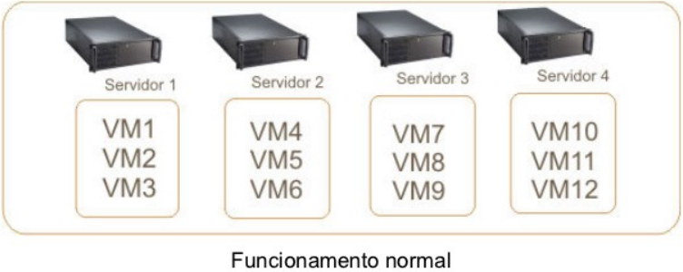
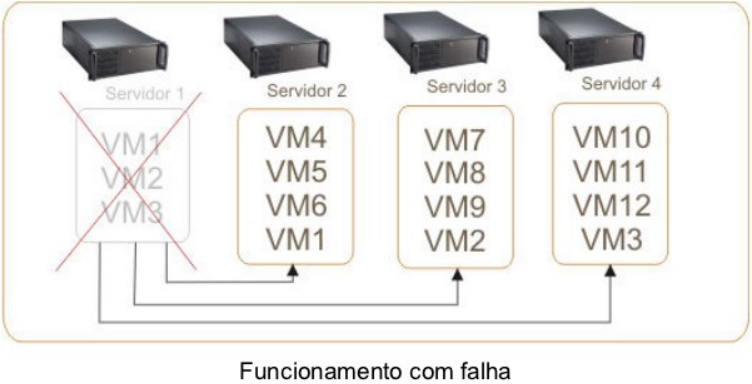
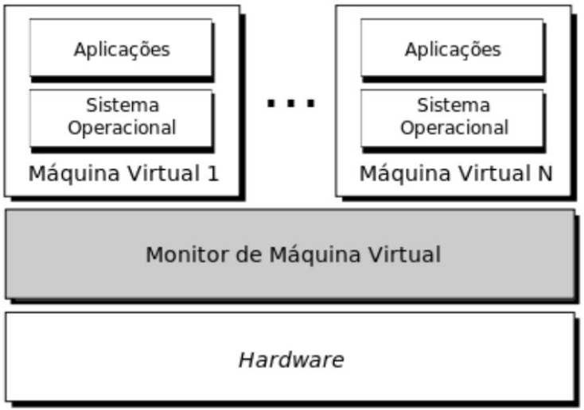
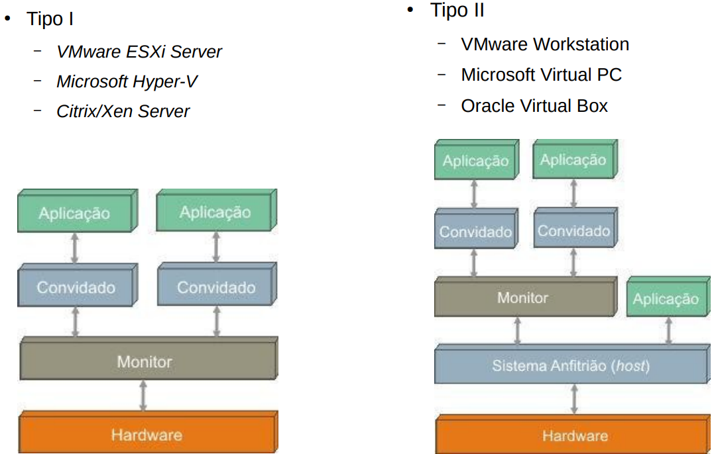

Aula 05 — Máquinas Virtuais
Computação em Nuvem e Virtualização
Ricardo Pasquati Pontarolli
Técnico em Redes de Computadores · IFSP Boituva · pasquati@ifsp.edu.br · v31
Introdução - Por que virtualizar?
- Descentralização de recursos computacionais.
- Cloud computing
- Plena utilização de recursos físicos.
- “Do more with less”
- Reaproveitamento de recursos
- Diferentes SOs no mesmo hardware.
- Isolamento de aplicações
- Segurança
- Redução no número de máquinas físicas.
- Economia de energia, espaço, dinheiro
Introdução - Por que virtualizar?
- Facilidade de gerenciamento.
- Treinamentos e ambientes de ensino.
- Facilidade para restauração e recuperação de serviços.
- Maior disponibilidade
- Tolerância a falhas
Introdução - Por que virtualizar?


Introdução - Contexto histórico
- Surgiu na década de 60 na IBM.
- Soluções combinadas em hardware e software (desempenho!).
- Dividir logicamente o mainframe.
- Recurso caro, necessário utilização completa.
- Popularização do x86 no final da década de 80.
- Desktops
- Virtualização ficou de lado
- Popularização da Internet a partir da década de 90.
- Alta disponibilidade,
- Necessidade de economia de recursos,
- Virtualização ganha espaço novamente.
Conceitos
- “Uma máquina virtual é uma cópia eficiente e isolada da máquina real” (POPEK; GOLDBERG, 1974).
- Uma Máquina Virtual é um ambiente de computação que opera como um sistema de computador completo, com seu próprio hardware virtual, porém, executado sobre um hardware físico existente.
- Em essência, é um computador dentro de outro computador.
- Existem duas categorias de máquinas virtuais:
- Máquinas virtuais de processo (ex. JVM).
- Execução de programas
- Máquinas virtuais de sistemas (ex. Virtual Box).
- Execução de SO completo
- Máquinas virtuais de processo (ex. JVM).
Conceitos - MMV
- Monitor de Máquina Virtual (MMV) ou Virtual Monitor Machine (VMM)
- Camada de software que abstrai os recursos físicos para utilização das máquinas virtuais,
- Hipervisor ou Hypervisor.
Conceitos - MMV

Conceitos - MMV
- Definições de Popek e Goldberg:
- O MMV deve fornecer aos programas um ambiente idêntico ao da máquina original.
- Os programas nesse ambiente devem apresentar como perda apenas uma diminuição de sua velocidade de execução.
- O MMV deve possuir controle completo sobre os recursos do sistema.
- O MMV deve interpretar e emular o conjunto de instruções entre as máquinas virtuais e a máquina real.
Conceitos - MMV
- Principais funções do MMV:
- Definir o ambiente de máquinas virtuais.
- Alterar o modo de execução do sistema operacional.
- Kernel ⟷ User
- Emular as instruções e escalonar CPU para as VMs
- Muitas instruções do processador virtual devem ser executadas diretamente pelo processador real, sem que haja intervenção do monitor (eficiência!).
- Gerenciar acesso a memória e disco.
- Intermediar as chamadas de sistema e controlar acesso a outros dispositivos de I/O.
- Drive USB, dispositivos de rede etc.
Conceitos - Definições
- Abstração de Hardware:
- A máquina virtual abstrai o hardware físico subjacente, fazendo com que o sistema operacional convidado “pense” que está interagindo diretamente com hardware físico dedicado.
- Isolamento:
- Cada máquina virtual é isolada das outras VMs e do sistema operacional hospedeiro.
- Isso significa que problemas em uma VM geralmente não afetam as outras ou o host.
Benefícios - Otimização do Hardware
- Consolidação de Servidores:
- Em vez de ter múltiplos servidores físicos para diferentes aplicações, é possível rodar diversas VMs em um único servidor físico potente, economizando espaço, energia e custos de hardware.
- Utilização Máxima de Recursos:
- Garante que o hardware físico seja utilizado de forma mais eficiente, evitando ociosidade.
Benefícios - Flexibilidade e Agilidade
- Provisionamento Rápido:
- Criar e configurar uma nova VM é muito mais rápido do que adquirir, instalar e configurar um novo hardware físico.
- Portabilidade:
- VMs podem ser facilmente movidas de um host físico para outro (migração), o que é crucial para balanceamento de carga, manutenção ou recuperação de desastres.
- Snapshots e Rollbacks:
- É possível “fotografar” o estado de uma VM em um determinado momento (snapshot) e retornar a esse estado posteriormente, ideal para testes de software ou recuperação de erros.
Benefícios - Segurança e Isolamento
- Ambientes de Teste e Desenvolvimento Seguros:
- Desenvolvedores podem testar novas aplicações ou configurações em VMs isoladas sem o risco de afetar sistemas de produção.
- Segurança Aprimorada:
- Se uma VM for comprometida por malware, o impacto é contido dentro daquela VM, sem se espalhar para o host ou outras VMs.
Benefícios - Redução de Custos
- Menos Hardware:
- Diminui a necessidade de comprar múltiplos servidores físicos.
- Menor Consumo de Energia:
- Menos servidores físicos significam menor consumo de energia e refrigeração.
- Simplificação da Gerência:
- Ferramentas de virtualização centralizam a gerência de múltiplos servidores.
Benefícios - Compatibilidade e Legacy
- Execução de Sistemas Operacionais Legados:
- Permite rodar sistemas operacionais antigos que não são compatíveis com hardware moderno, garantindo a continuidade de aplicações antigas essenciais.
Desafios - Desafios e Considerações ao Trabalhar com VMs
- Gerenciamento da Complexidade:
- Ambientes com muitas VMs podem se tornar complexos de gerenciar sem ferramentas adequadas.
- Gargalos de Desempenho:
- I/O de Disco: O subsistema de disco é frequentemente o maior gargalo em ambientes virtualizados, especialmente com muitas VMs acessando o mesmo armazenamento.
- Rede: A capacidade da rede física do host e a configuração das redes virtuais são cruciais.
Desafios - Desafios e Considerações ao Trabalhar com VMs
- Licenciamento de Software:
- O licenciamento de alguns softwares pode ser mais complexo ou caro em ambientes virtualizados.
- Segurança:
- Embora o isolamento seja um benefício, vulnerabilidades no hipervisor ou configurações incorretas podem comprometer a segurança.
- Custo Inicial:
- O investimento inicial em hardware potente e software de virtualização pode ser significativo, embora geralmente compense a longo prazo.
Componentes - Componentes Virtuais
- Para que uma VM funcione como um computador completo, ela precisa de seus próprios componentes virtuais:
- CPU Virtual (vCPU):
- O hipervisor aloca “fatias” do tempo de processamento das CPUs físicas para as vCPUs das VMs.
- É possível atribuir múltiplos núcleos e até processadores virtuais.
- Memória Virtual (vRAM):
- O hipervisor gerencia a alocação de memória RAM física para as VMs.
- Técnicas como memory ballooning e deduplication podem ser usadas para otimizar o uso da memória.
- CPU Virtual (vCPU):
Componentes - Componentes Virtuais
- Para que uma VM funcione como um computador completo, ela precisa de seus próprios componentes virtuais:
- Disco Virtual (vHDD):
- O disco rígido de uma VM é, na verdade, um arquivo (ou conjunto de arquivos) no sistema de arquivos do host físico.
- Existem diferentes formatos de disco virtual (VMDK, VHD, VDI, QCOW2) e tipos (thick provisioned, thin provisioned).
- Placa de Rede Virtual (vNIC):
- Permite que a VM se conecte à rede, seja por meio de uma ponte com a placa de rede física do host, por NAT ou por redes internas virtuais.
- Controladores de Dispositivo Virtuais:
- A VM possui controladores virtuais para diversos dispositivos, como adaptadores de barramento, controladores de vídeo, etc.
- Disco Virtual (vHDD):
Tipos de Máquinas Virtuais
- Máquinas virtuais clássicas ou de Tipo I
- O monitor é implementado entre o hardware e os sistemas convidados.
- Executa com a maior prioridade sobre os sistemas convidados.
- Pode interceptar e emular todas as operações que acessam ou manipulam os recursos de hardware.
- VMware ESXi Server, Microsoft Hyper-V, Citrix/Xen Server.
Tipos de Máquinas Virtuais
- Máquinas virtuais Hospedadas ou de Tipo II
- O monitor é implementado como um processo de um sistema operacional “real”.
- O monitor simula todas as operações que o sistema anfitrião controlaria.
- VMware Workstation, Microsoft Virtual PC, Oracle Virtual Box.
Tipos de Máquinas Virtuais

Tipos de Máquinas Virtuais - Virtualização Total
- Provê uma completa simulação da subcamada de hardware para os sistemas convidados.
- Todos os SOs que são capazes de executar diretamente em um hardware também podem executar em uma máquina virtual.
- Não há necessidade de modificações nos sistemas operacionais convidados.
- Todos os SOs que são capazes de executar diretamente em um hardware também podem executar em uma máquina virtual.
- O Monitor roda em modo kernel (Tipo 1), e os sistemas convidados em modo usuário.
- Todas as instruções são “testadas”.
- As instruções sensíveis (privilegiadas) são capturadas e emuladas na VM.
Tipos de Máquinas Virtuais - Virtualização Total
- Instruções sensíveis
- São aquelas que podem consultar ou alterar o status do processador.
- Instruções privilegiadas
- Só podem ser executadas em modo kernel.
- Geram trap quando executadas em modo usuário.
- Só podem ser executadas em modo kernel.
- Segundo Popek e Goldberg, uma máquina é virtualizável se:
- Instruções sensíveis formarem um subconjunto de instruções privilegiadas.
- IBM/370 é virtualizável.
Tipos de Máquinas Virtuais - Virtualização Total

Tipos de Máquinas Virtuais - Virtualização Total
- Desvantagens
- O número de dispositivos (drivers) a serem suportados pelo Monitor é extremamente elevado.
- Instruções executadas pelo SO visitante devem ser testadas pelo Monitor.
- Ter que contornar alguns problemas gerados pela implementação dos SOs.
- SOs foram projetados para serem executados como instância única nas máquinas físicas.
- Ex: Paginação ⟶ Disputa SOs ⟶ queda de desempenho.
Futuro - Tendências e o Futuro da Virtualização
- Contêineres (Docker, Kubernetes):
- Embora não sejam VMs, os contêineres oferecem um nível diferente de abstração e isolamento e são frequentemente usados em conjunto com VMs em arquiteturas de nuvem.
- VMs fornecem a infraestrutura para rodar contêineres.
- Virtualização de Funções de Rede (NFV):
- Virtualização de funções de rede tradicionalmente implementadas em hardware dedicado (firewalls, roteadores, balanceadores de carga).
Futuro - Tendências e o Futuro da Virtualização
- Edge Computing:
- VMs em locais de borda para processamento de dados mais próximo da fonte.
- Serverless Computing:
- Embora abstraia ainda mais a infraestrutura, VMs ainda são o substrato para muitas plataformas serverless.
- Inteligência Artificial e Machine Learning:
- VMs com GPUs virtuais ou pass-through de GPU para cargas de trabalho de IA.
Obrigado!
Início · IFSP Boituva · Computação em Nuvem e Virtualização